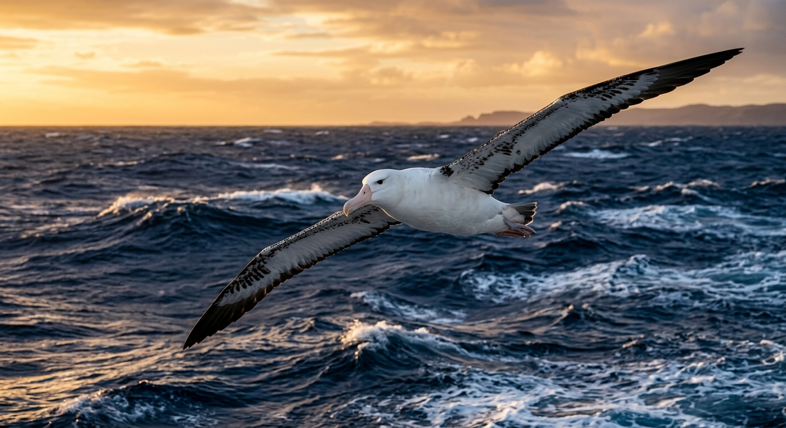
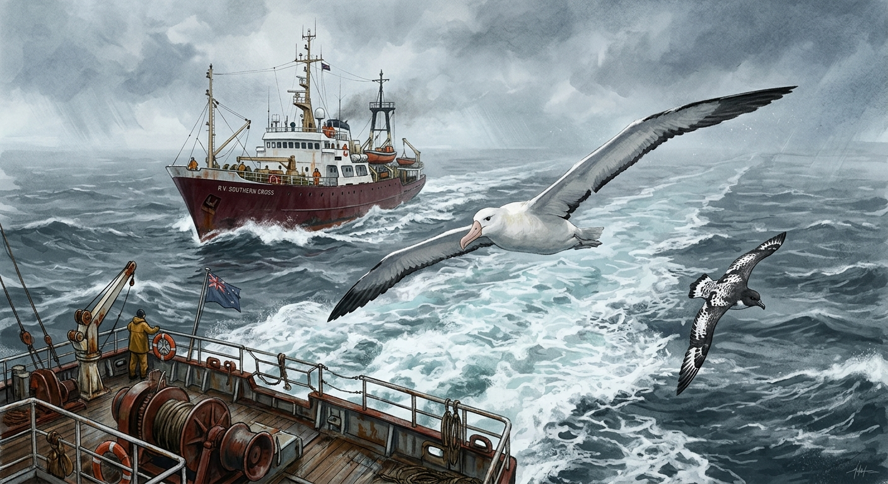

Twenty-one years of ten-minute seabird counts, hand-written on ships crossing the Tasman Sea, are now a 12,310-row dataset. Here is what they reveal — and what one volunteer named J. Jenkins did to make it possible.

Between 1969 and 1990, volunteer observers leaned over the rails of cargo ships, fishing trawlers, and research vessels crossing the Tasman Sea, scribbling every bird they saw into pocket notebooks. Each entry covered exactly ten minutes — a slice of the open ocean turned into a row of paper. The notebooks now live at Te Papa Tongarewa, the Museum of New Zealand, where staff have transcribed them into the dataset behind this post: 12,310 ten-minute censuses paired with 49,019 species observations.
The geography is unforgiving. Records span fifty degrees of latitude and one hundred and thirty degrees of longitude, but the heart of the program is the Tasman Sea and adjacent Southern Ocean — one of the most productive seabird zones on Earth, where the East Australian Current meets cold Subantarctic water at the Subtropical Front and concentrates krill, squid, and fish into albatross-sized meals. Almost every census recorded birds: only 1.4% came back blank. In these waters, ten minutes was almost never enough time for nothing to happen.
The data quality is exactly what you would expect from a hand-recorded program: behaviours and locations are nearly perfect, instruments are mostly missing. Position, observer, date, time, and behaviour flags are populated in over 99.9% of censuses. But ocean depth is missing from 98.9% of records, sea-surface temperature from 94.4%, atmospheric pressure from 93.7%, and air temperature from 91.6%. Anything an observer could note from the deck got noted; anything requiring a gauge below decks usually did not.
A second quality caveat is taxonomic. The species_common_name column was the original log entry — free text written at speed on a moving ship — and 38.7% of those entries could not be resolved to a single species. Te Papa staff record those as slash-separated aggregates like "Diomedea epomophora / sanfordi / antipodensis / exulans". Six entries also carry the sentinel value 99,999, meaning "we estimated more than one hundred thousand birds and stopped counting" — they have to be excluded from any sum.
The dataset has two kinds of "top species" lists, and they tell different stories. Ranked by how often a species shows up across the 48,328 species rows, four of the top five entries are wandering albatross plumage stages: PL2 (3,104 records), PL3 (2,885), PL1 (1,818), PL4 (1,475). Cape petrel (2,936), grey-faced petrel (2,597), and unidentified prion (2,094) round out the encounters.
Re-ranking by total individuals counted flips the picture entirely. Short-tailed shearwater alone accounts for 482,558 of the 1.34 million birds counted across the program — 36% of every individual ever logged — followed by unidentified prion (226,500) and sooty shearwater (174,329). Albatrosses do not even reach the top fifteen by birds-counted. Albatrosses are seen often but in small numbers; shearwaters are seen rarely but in feeding aggregations of thousands. Two top-tens, two ecologies.
Flatten the 12,310 censuses onto a 5°×5° grid and the densest cell sits at roughly 40°S, 170°E with 1,293 censuses (10.5% of program effort) and 210,861 individual birds counted; the second is just below it at 45°S, 170°E. These cells sit in the southern Tasman Sea and the Subtropical Front off New Zealand's South Island — exactly where royal albatross, white-capped mollymawk, and sooty shearwater forage between breeding bouts on New Zealand's offshore islands.
By latitude band, two-thirds of effort (66.0%) sits between 30°S and 40°S — the warmer Tasman waters around the North Island; another 28.6% sits on the Subtropical Front (40-50°S). Together those two bands hold 94.6% of all program effort. Antarctic-water records south of 50°S (590 censuses) and tropical records north of 30°S (70 censuses) are exotic outliers in this dataset.
The number of censuses per year does not look like a smooth trend; it looks like a heartbeat that stopped and restarted. After 243 censuses in 1969 the program effectively paused — 1970 through 1974 inclusive recorded zero. Activity resumed in 1975 with 202 censuses, ramped up through the late 1970s, and peaked in 1987 at 1,634. The four years 1984–1987 alone hold 5,847 of the 12,310 censuses — 47.5% of all program effort. By 1989-1990, effort had collapsed to 26 and 20 censuses.
The shape of this curve is a story about volunteer observers and ship schedules, not about birds. The Australasian Seabird Mapping Scheme depended on people who happened to be on a vessel that happened to be passing through; pause the recruitment, and the data goes flat. Across all years effort is reasonably balanced across seasons, and 98.4% of censuses were full ten-minute counts rather than partial observations. When observers were active, they were rigorous; the gaps come from above, not from the protocol.
Every species record carries a set of TRUE/FALSE behaviour flags, and the most striking is following_ship. Roughly a quarter of all 48,328 species records are flagged following_ship (24.5%) — almost the same as flying_past (24.3%) — followed by accompanying (13.8%), feeding (7.5%), and sitting_on_water (7.2%). Active natural feeding is logged in only 2.0% of records.
Who follows? Of the 11,819 ship-following observations, wandering albatrosses across plumage stages PL1-PL4 plus AD and SUBAD account for 5,491 records — 46.5% of every ship-following event in two decades — followed by Cape petrel (1,021) and black-browed albatross adults (823).
The fingerprint is sharp. Wandering albatross PL3 follows ships in 55.2% of its observations and flies past in only 1.1%; PL4 follows in 48.2%; PL2 in 46.4%. By contrast, prion (unidentified) follows ships in only 5.0% but flies past in 44.9%, and Australasian gannet AD almost never follows (0.7%) yet is the only top-ten species to feed naturally at any meaningful rate (8.2%). Grey-faced petrel and prion are passers-through; albatrosses and Cape petrels are the entourage.

The final feature of the dataset is its most human. The entire 21-year record was produced by 26 unique observers — and one of them, J. Jenkins, recorded 6,583 censuses, 53.5% of the program. The top five (Jenkins, N. Cheshire 1,462, A. Baines 1,250, J.D. Cleaver 1,023, M.J. Carter 747) account for 89.9% of all effort; the top ten cover 96.4%.
Ninety-four per cent of the censuses were taken from a ship that was steaming or sailing; only 0.5% from a line-fishing boat and 0.4% from a trawler — meaning fishery-discard interactions are massively under-sampled relative to their ecological importance. Wind matters too, but only a little. Where wind class was logged, Beaufort 2-5 (light to fresh breezes) covers 73% of those censuses; gales are rare and the one hurricane census recorded zero birds. Median birds-per-census is remarkably stable across the breeze range — six birds at calm, eight to ten birds from light breeze through gale. Weather is a poor predictor of how many birds an observer saw, because two effects cancel: high winds mean better albatross soaring (more birds aloft) but worse visibility (fewer birds detected).
What we are left with is a baseline. A pre-1990 portrait of a Southern Ocean seabird community, hand-written in pencil on a moving ship, before the worst of the longline-bycatch crisis and before the Tasman Sea warmed measurably. Every conservation policy of the last three decades — ACAP, area closures, line-weighting regulations — is being measured against logbooks like this one.